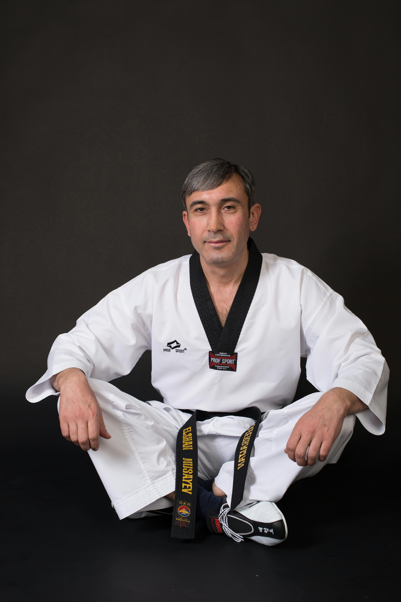

Certificación Kukkiwon
La certificación Kukkiwon es un reconocimiento oficial emitido por el Kukkiwon, también conocido como la sede mundial del taekwondo, ubicada en Seúl, Corea del Sur. Esta certificación valida las habilidades y conocimientos de los practicantes de taekwondo conforme a los estándares internacionales de la disciplina. Ser certificado por el Kukkiwon significa que has alcanzado un nivel de competencia y excelencia reconocido globalmente, y que estás cualificado para participar en competiciones y eventos internacionales, así como para impartir enseñanzas y entrenamientos en taekwondo.